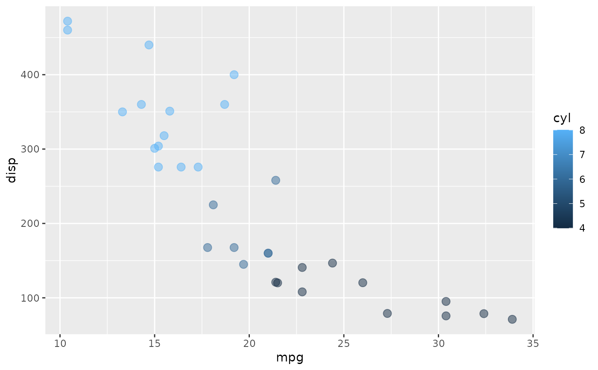

Custom ggplot2 function for building
scatter plots in moviesApp().
Usage
scatter_plot(df, x_var, y_var, col_var, alpha_var, size_var)
Arguments
- df
data.frame or tibble
- x_var
string variable mapped to x axis
- y_var
string variable mapped to y axis
- col_var
string variable mapped to color
- alpha_var
number for point alpha
- size_var
number for point size
Value
A ggplot2 plot object
Examples
scatter_plot(mtcars,
x_var = "mpg",
y_var = "disp",
col_var = "cyl",
alpha_var = 0.5,
size_var = 3)
